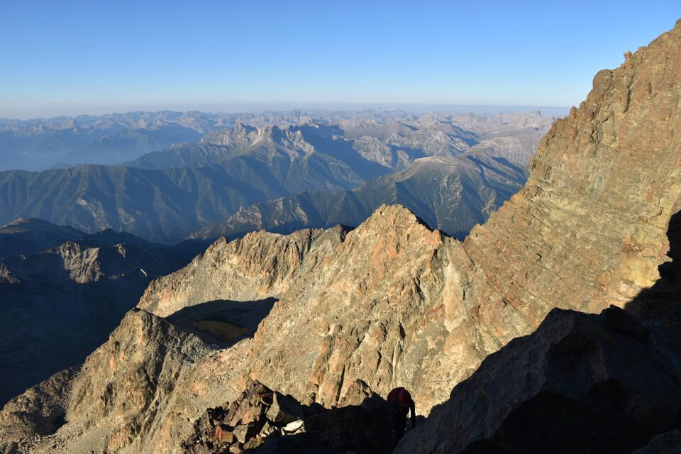
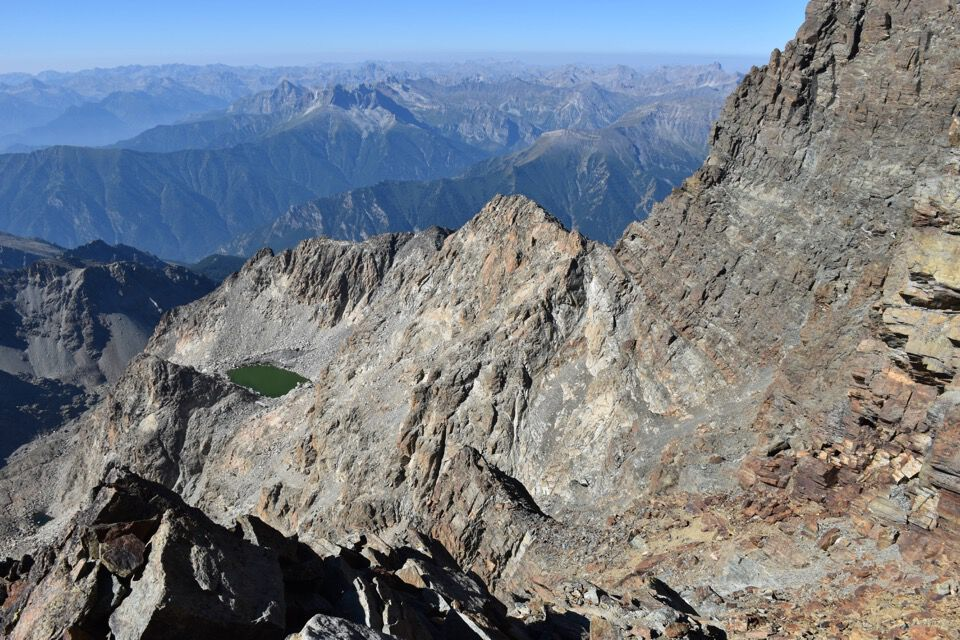
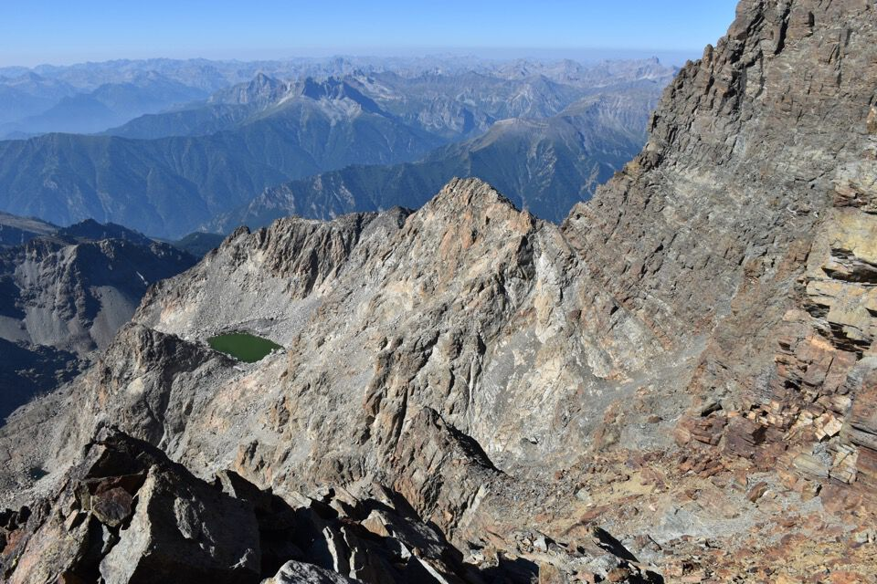

Monviso, Re di Pietra, gigante delle Alpi Cozie... c'è bisogno di presentazioni?
Splendida gita di quattro giorni passata «accampati» in quota presso il rifugio Quintino Sella: giornate sì intense ma bellissime, che mai dimenticherò.
Leggi il racconto della prima ascensione (1861) e quello della celebre prima salita italiana (1863) ad opera di Quintino Sella: costui, di ritorno dalla salita, fondò a Torino il Club Alpino Italiano.
Partiamo di pomeriggio dai Piani de Re, carichi come muli, in direzione del rifugio Sella. Non bastasse il lungo viaggio e il peso sulla groppa, ci becchiamo pure il nebbione: tento di convincermi che siano solo nubi basse...
...cosa che si rivela vera! Se vai per monti saprai bene come un evento del genere giovi all'istante sull'umore e sulle energie!
Alziamo lo sguardo e ci appare per la prima volta, imponente a dismisura, il Monviso!
Questo perché non ce lo portiamo a casa?
Il profilo slanciato del Monviso.
Ed eccoci finalmente al bel rifugio Quintino Sella, noi però non godiamo di questi lussi...
...per cui andiamo a cercare un posto per la tenda.
C'è da chiudere bene la tenda che ancora un po' e ti ritrovi uno stambecco dentro...
Ascesa al Monviso
Ore 2.30 della notte: l'inizio non potrebbe essere più emozionante.
Ci lasciamo alle spalle il rifugio e il Viso Mozzo.
Lassù il Passo delle Sagnette che dobbiamo valicare.
Era prima volta che camminavo in montagna di notte: è stato bellissimo.
Arriviamo al Passo delle Sagnette che è ancora notte fonda: la luna a breve sparirà dietro i profili delle Alpi Marittime.
Ed ecco la parete sud del Viso: qualcuno ci precede.
Arrivano le prime luci.
Eccoci alla cengia d'attacco.

Colori di una bellezza infinita: nessun filtro né ritocco, come tutte le altre foto.
E via su.
Inizia un nuovo giorno.

Qualche passaggino: la via è molto più facile di quello che pensavamo. Addirittura troppo facile!
Il camino, e questo sarebbe un III+? Ma per carità... è un II grado!
Sotto le rocce terminali.
In vista di Crissolo.
Ecco la croce di vetta, che per fare gli alternativi raggiungiamo dritti per dritti.
In cima alle otto del mattino!
Ancora in ombra la valle del Guil (Francia), che percorreremo il giorno dopo valicando poi il Passo di Vallanta e il Passo Giacometti.
Per la prima volta vedo le grandi montagne del Delfinato di cui avevo letto nei libri di Kugy.

Ancora non ho capito se questo è il Gran Paradiso.
Vediamo anche il Monte Bianco, il Monte Rosa e il Cervino, purtroppo con un po' di foschia (inspiegabile come non li abbia fotografati).
Le ombre sono così lunghe che sembra autunno, ma è semplicemente mattina presto.
E comunque, visto l'affollamento della cima, decidiamo di traversare per cresta all'altra vetta, di poco più bassa.
La cima principale è detta Punta Trieste, l'altra (antecima nord) Punta Nizza.
Su Punta Nizza non c'è anima viva: che bello.
E poi da qui vediamo anche il Viso di Vallanta (o Dado di Viso).
Dopo una lunga sosta è ora di scendere.
 

Ora con la luce vediamo tutta la parete sud.
Il lago delle Forciolline: al di là si scende in val Varaita.
Ma noi torniamo al rif. Sella.
Bene, gita finita? Eh no! Pasticci organizzativi ci fanno tornare giù alla macchina per... ritornare su al rifugio. 3h da cartello CAI!!! Per me la più micidiale e penosa sfiancata di sempre.
Alla fine è come se avessimo salito il Monviso in giornata dai Piani del Re (sono 2200 di dislivello!).
Il Viso Mozzo che saliremo due giorni dopo all'alba.
Il giorno termina come il precedente, sopra un magnifico mare di nubi.
Dopo diciotto ore ci si può di nuovo distendere nella tenda.
***
«Ma egli è inutile che io tenti neppure di adombrarti spettacoli di tal fatta. Una sola penna avrebbe potuto dipingerli, quella di Dante! Gran peccato che il poeta fiorentino invece delle microscopiche accidentalità degli Apennini non abbia conosciuto i colossali e sublimi orrori delle Alpi! Che immagini e che pennellate ne avrebbe tratto quel finissimo osservatore della natura, il quale così profondamente ne sentiva tutte le più recondite bellezze!»
(Quintino Sella, Una salita al Monviso, 1863)